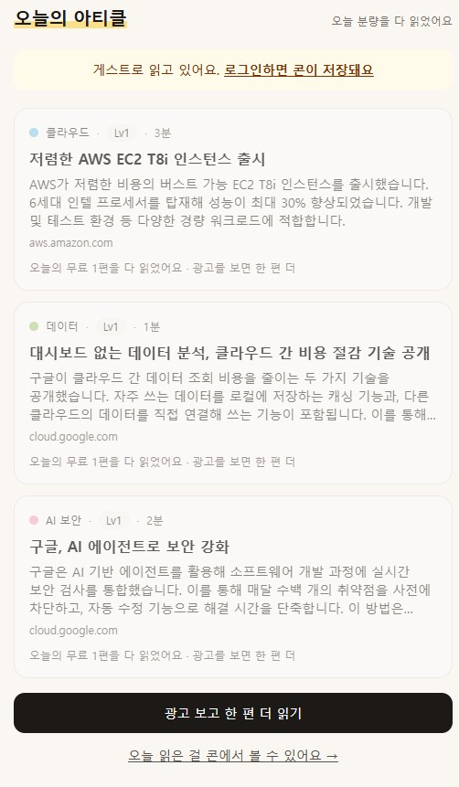
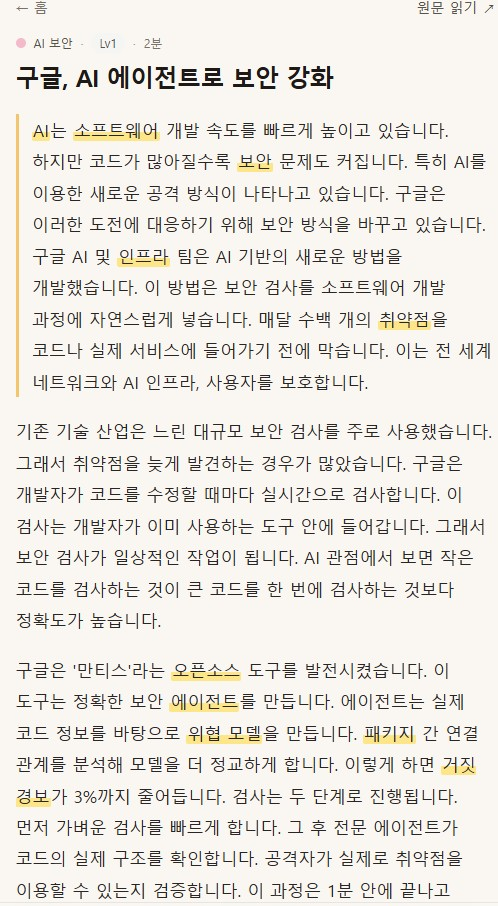
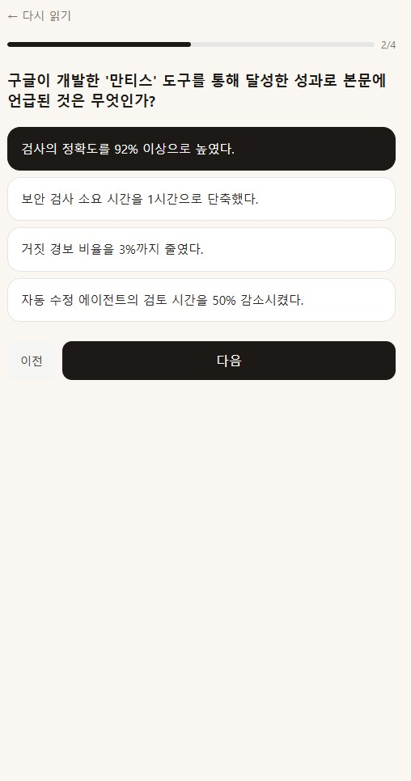
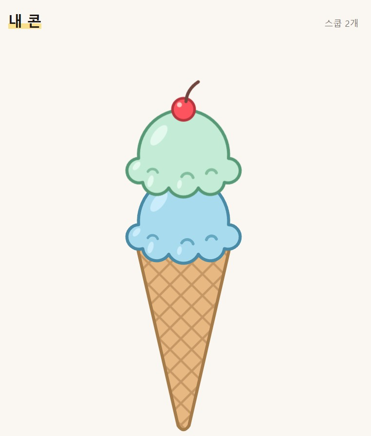

artice cream은 개발·AI 글을 수집하고, 읽기 수준에 맞는 본문과 용어 풀이·퀴즈를 제공하는 앱입니다. 읽기를 마친 글은 아이스크림 스쿱으로 저장합니다.
읽기
오늘 탭에서 글을 고르고
본문 속 용어 뜻 펼쳐 보기퀴즈
4문항을 풀고 채점 결과로
다음 읽기 수준 조정저장
완료한 글을 저장하고
콘에 쌓인 스쿱 확인
다루는 분야
발행처 피드 40곳의 글을 CS·AI 8개 분야로 분류합니다.
- 클라우드
- 인프라
- 데이터
- CS 기초
- 딥러닝
- LLM
- AI 보안
- 보안
수준에 맞추는 방식
글마다 3개 수준의 본문을 만들고, 용어 풀이와 퀴즈를 붙입니다. 요약과 중요한 문단을 강조하고, 최근 3회 퀴즈 점수의 평균으로 읽기 수준을 조정합니다.
읽기 횟수와 복습
하루 무료 1편과 광고를 통한 최대 3편 추가 열람을 구현했습니다. 횟수는 한국 시간 자정에 초기화되며, 한 번 연 글은 다시 읽어도 차감하지 않습니다. 퀴즈를 다시 풀면 복습으로 처리합니다.
광고는 아직 테스트용입니다. 실제 리워드 광고 연결은 출시 전 작업으로 남아 있습니다.
구성
웹·API는 Next.js와 Vercel, 데이터·인증은 Supabase, 글 가공은 OpenAI 호환 LLM 게이트웨이를 사용합니다. 안드로이드 앱은 정적 내보내기와 Capacitor로 구성했습니다.
운영 현황
아래 수치는 아침(KST) 점검 기록입니다.
- 가공 완료
- 42편분야별 4~7편
- 가공 대기
- 592건대기 자료 보관 기한 10일
- 예약 작업
- 9개수집 1개 + 분야별 가공 8개
- 계정
- 22개익명 20개 · 정식 2개
분야당 하루 1편씩 가공하고 있습니다. 대기 자료 대부분이 가공 차례 전에 만료되어 처리량 확대가 필요합니다.
끝낸 작업
- 구현
수집과 가공을 나눈 파이프라인
피드 수집·분류 후 대기열에 넣고, 분야별 작업이 본문을 추출해 3개 수준으로 가공합니다. 본문 길이 검증, 재요청 1회, 용어 수 제한, 첫 출현 표시, 중요 문단 강조와 용어 자동 집계까지 반영했습니다.
- 구현
읽기부터 퀴즈·저장까지
오늘 탭에서 리더, 퀴즈, 서버 채점, 수준 조정, 콘 저장으로 이어집니다. 용어 뜻을 행간에 펼쳐 보고 원문 링크로 이동할 수 있으며, 저장하면 새 스쿱이 떨어집니다.
- 구현
데이터 접근과 인증
Supabase 서울 리전에 데이터베이스와 접근 정책을 구성했습니다. 원문 전체와 퀴즈 정답은 클라이언트에 노출하지 않습니다. 구글 OAuth와 이메일 매직링크, PKCE와 토큰 기반 API 인증을 구현했습니다.
- 확인
읽기 한도와 테스트 광고 보상
서버에서 무료·추가 열람 한도와 자정 초기화를 적용합니다. 광고 보상은 테스트용으로 연결했고, 관련 버그 3건을 수정한 뒤 9월 27일 웹에서 추가 열람까지 확인했습니다.
- 확인
안드로이드 핵심 흐름
Capacitor, 앱용 정적 빌드, 로그인 딥링크, 세션 저장을 구성했습니다. 9월 27일 에뮬레이터에서 읽기 → 퀴즈 → 저장을 확인했으며, Play 제출은 아직입니다.
- 운영
웹 배포와 예약 작업
GitHub 공개 저장소의 main 브랜치를 Vercel에 연결했습니다. 9월 29일부터 9개 예약 작업이 실행된 것을 데이터베이스 기록으로 확인했습니다.
만드는 과정에서 달라진 점
- 경제·정치·IT 뉴스 → CS·AI 8분야
구글뉴스 RSS 대신 발행처 피드 40곳을 직접 수집하는 방향으로 바꿨습니다.
- 한 번에 처리 → 수집·분야별 가공 분리
실행 시간 제한에 맞춰 예약 작업을 9개로 나눴습니다.
- 웹 PWA → 안드로이드 앱
리워드 광고 보상을 서버에서 검증하는 흐름에 맞춰 Capacitor와 정적 내보내기를 채택했습니다.
- 게스트 우선 → 처음부터 로그인
기존 계정으로 들어가기 어렵고 게스트 기록을 합칠 수 없던 문제를 해결하는 방향으로 전환했습니다. 기존 익명 기록은 이전하지 않습니다.
- SDK 직접 호출 → 호환 게이트웨이
현재 게이트웨이에는 프롬프트 캐싱·Batch API가 없고 비용 추정값이 0이어서, 실측 비용 검토는 보류 중입니다.
글을 고르고, 읽고, 퀴즈를 풀고, 콘에 저장하기까지. 다섯 장의 화면으로 앱의 이용 흐름을 살펴볼 수 있습니다.
사진을 누르면 새 탭에서 원본 크기로 볼 수 있습니다.
-

오늘의 아티클
분야와 읽기 수준, 예상 시간을 확인하고 읽을 글을 고릅니다. 카드에는 제목과 짧은 요약, 출처가 함께 표시됩니다.
캡처는 오늘의 무료 분량을 모두 읽은 상태로, 추가 읽기 안내와 내 콘으로 가는 링크가 보입니다.
게스트 안내는 로그인 우선 전환 전 화면입니다. 광고 연결은 아직 테스트용입니다.
-

수준에 맞춘 본문 읽기
선택한 글을 읽기 수준에 맞게 가공한 본문으로 읽습니다. 상단에는 분야·수준·예상 시간이, 본문에는 용어와 중요한 문단이 강조되어 있습니다.
강조된 용어를 누르면 뜻을 확인할 수 있고, 오른쪽 위의 ‘원문 읽기’로 발행처의 글을 열 수 있습니다.
-

네 문항으로 이해도 확인
읽은 본문을 바탕으로 만든 객관식 퀴즈를 풉니다. 상단의 진행 막대와 문항 번호로 어디까지 풀었는지 확인합니다.
선택한 답은 진한 색으로 표시됩니다. 이전·다음 버튼으로 문항을 이동하거나 ‘다시 읽기’로 본문을 확인할 수 있습니다.
-

결과와 해설로 복습
점수와 정답 수를 확인하고, 문항별로 내가 고른 답·정답·해설을 비교합니다. 캡처는 네 문제 중 한 문제를 맞힌 결과입니다.
최근 세 번의 평균 점수와 다음 수준 안내도 함께 표시됩니다. 복습을 마치면 ‘콘에 올리기’로 읽기 기록을 저장합니다.
-

읽은 만큼 쌓이는 내 콘
저장한 글 한 편이 스쿱 하나가 되어 콘에 쌓입니다. 분야에 따라 다른 색을 사용해 읽기 기록을 눈으로 확인할 수 있습니다.
캡처에는 두 개의 스쿱이 쌓여 있으며, 오른쪽 위에 전체 스쿱 수가 표시됩니다.
배포·운영
지금 바로- 로그인 우선 전환의 배포 반영 확인. 점검 당시에는 익명 로그인 중단으로 새 방문자의 온보딩이 막힌 상태
- 배포 후 구글 로그인·이메일 링크를 웹과 앱에서 각각 끝까지 확인
- Vercel 사이트 URL과 Supabase의 사이트·로그인 복귀 URL 설정 점검
- 가공량을 분야당 하루 2편으로 늘리고, 다음 날 처리 중단 사유와 실행 시간 확인
- 클라우드·인프라·데이터 분야에서 가공 결과가 없었던 날의 추출 실패·재시도·대기열 확인
- 기존 익명 계정 20개의 정리 여부 결정, 사용하지 않는 수동 계정 연결 설정 해제 검토
점검 문서에는 로그인 전환이 ‘커밋 전’으로 남아 있지만 로컬 커밋에는 반영되어 있습니다. 배포 완료 여부와 로그인 검증은 별도 확인이 필요합니다.
앱 출시
출시 전- AdMob 계정·광고 단위·앱 플러그인·서버 보상 검증을 연결하고 테스트 광고로 일일 상한까지 확인
- FCM 푸시 구독과 수집 후 발송 작업 구현, 알림 권한을 거부해도 사용할 수 있는 흐름 점검
- 앱에 API 주소를 넣기 전에 커스텀 도메인 결정
- Play 개발자 계정, 서명 키, 대상 SDK, 광고 ID 권한 준비
- 개인정보처리방침 URL, 데이터 보안 양식, 스토어 스크린샷·설명 작성
- 스토어 제출 전 콘텐츠 저작권 검토 완료
- 광고 운영 시 Vercel Pro 전환 검토와 실행 시간 설정 조정
품질 점검
베타 준비- 앱의 반응형 화면, 키보드 포커스, 모션 감소 설정, 빈 화면·오류 안내 점검
- 콘의 스쿱을 보조기술로 탐색할 수 있는 버튼 목록 구조 반영
- 파이프라인 실행 내역·추출 성공률·오류를 한곳에서 확인할 도구 마련
- ESLint 9 설정 추가와 베타 사용자 초대
계정·확장
그다음- 나 탭에 계정 화면과 로그아웃·계정 전환 기능 추가
- 이미 생성한 용어 풀이를 활용하는 단어장 탭 구현
- 크레딧 적립 → 테마 → 상점 → 연속 읽기·북마크 순서로 확장
아직 결정하지 않은 것과 문서 정리
- 웹 공개 유지, 오프라인 지원, iOS 출시 시점
- 콘의 정렬 방향, 탭 배지, 스쿱 선택 시 콘 이동 방식
- 유료 API 전환 시 비용 검증 재개, MVP 이후 Elo·IRT 수준 모델 검토
- 익명 로그인·게스트 기록·UTC 초기화·이전 경로 등 현재 구현과 어긋난 기획 문서 갱신
점검 기록 기반. 출시 일정은 아직 정하지 않았습니다.
구현 내용은 저장소에서 확인할 수 있습니다.
GitHub 저장소 보기